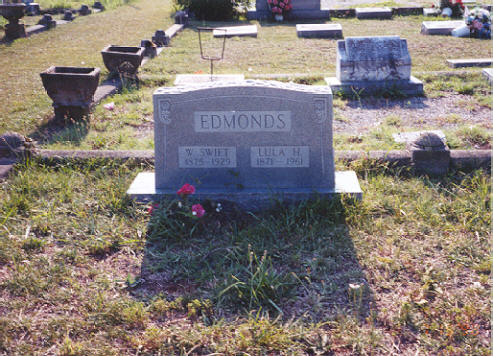

Up Tree
Warrior Swift Edmonds
b. 1874 - Lived in Carnesville Tocca, GA area.
d. 1929 - Buried at Old Silverbrook Cemetary in Anderson, SC.
Lula Victoria Hembree
b. 1871
d. 1961 - Buried beside Warrior Swift.

Warrior Swift ran "The Edmonds Store," a grocery store in
Anderson, SC on the corner of King Street and "F" Street which served
the Anderson Mill Community (Abney Mills).
Warrior and Lula lived on the corner of "F" Street and Linley St.
Children:
- Julia Elizabeth Edmonds
Married Henry (Pete) W. Wright
both burried at Oakdale cemetary
Children:
Darwin H. Wright
(Mayor of Anderson for over 20 years)
William (Bill) Theron Wright (d. Mar 21, 1989)
Evelyn Wright (Fountain)
Camilla Wright (Hale)
Vivian Wright (Johnson)
Myra Wright (McAlister)
- James (Jim) Thomas Edmonds
Married Ruth Hughes
Children:
Harold Lloyd Edmonds (died at age 60)
Charles T. Edmonds
- Henry (New Year) Newry Edmonds (b. Jan 1)
Married Helen Johnson
Children:
David Edmonds
Margaret Edmonds
- John Samuel (Sam) Edmonds
Married Virginia Lee
Children:
Larry Mott Edmonds (d.Dec 26, 1987)
Joann Edmonds (Cox) - Married James Cox
- Reece (Nub) Clarence Edmonds
Married Anna Bell
Two Children: Reece and Beverly
Had one arm cut off by Trolley Car. Drove gas trucks for
Ramseur Oil Company. Was killed in gas truck accident on
Clemson Highway at La France.
- William (Bill) Warrior Edmonds
(b. Feb 26, 1903, d. Oct 13, 1992)
Married Arietta Pruitt (b. Sep 19, 1912)
Children:
Billy Joe Edmonds (b. Jun 21, 1936)
Married Lucille Smith (Children Michael Dwayne and Timothy Lee)
Donnie Austin Edmonds (Oct 18, 1938)
Jimmy Warren Edmonds (Jul 26, 1941)
Charles Samuel Edmonds (Sep 22, 1943)
Nancy Arietta Edmonds (Sep 24, 1945)
- Luther Buford Edmonds (b. May 12, 1907) - Lives in Anderson, SC
Married Elizabeth Akin
Children:
Mary Alice Edmonds
Martha Edmonds
- Nancy Alma Edmonds
Married Frank Willis
Children:
Billy Frank Willis
Jeanette Willis
Jimmy Warren Edmonds (b. Jul 26, 1941)
Betty Frances <%'Payne%> (b. Jun 20, 1944)
Married Nov 24, 1963
Two Daughters:
Terri Ann Edmonds (b. 1971)
Married Lauren (Loren) Kevin Heyns
Patricia (Patti) Lynn Edmonds (b. 1973)
Married Timothy Brian Mims in 1996.
|